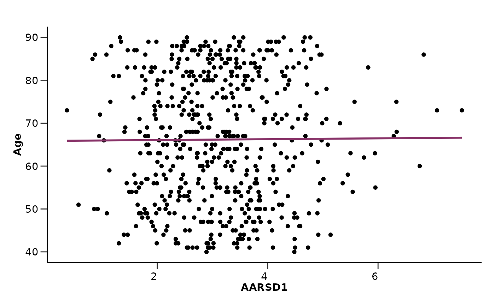

hd_plot_regression plots a scatter plot with a linear regression line.
It is possible to add the standard error of the regression line, as well as the
R-squared and p-value.
Usage
hd_plot_regression(
dat,
metadata = NULL,
metadata_cols = NULL,
x,
y,
se = FALSE,
line_color = "#883268",
r_2 = TRUE
)Arguments
- dat
An HDAnalyzeR object or a dataset in wide format and sample ID as its first column.
- metadata
A dataset containing the metadata information with the sample ID as the first column. If a HDAnalyzeR object is provided, this parameter is not needed.
- metadata_cols
The metadata variables to plot. Default is NULL.
- x
The column name of the x-axis variable. It should be a variable of the data or metadata.
- y
The column name of the y-axis variable. It should be a variable of the data or metadata.
- se
Whether to add the standard error of the regression line. Default is FALSE.
- line_color
The color of the regression line.
- r_2
Whether to add the R-squared and p-value to the plot. Default is TRUE.
Examples
# Initialize an HDAnalyzeR object
hd_object <- hd_initialize(example_data, example_metadata)
# Scatter plot for AARSD1 and ABL1
hd_plot_regression(hd_object,
x = "AARSD1",
y = "ABL1",
se = TRUE)
#> `geom_smooth()` using formula = 'y ~ x'
#> Warning: Removed 34 rows containing non-finite outside the scale range
#> (`stat_smooth()`).
#> Warning: Removed 34 rows containing missing values or values outside the scale range
#> (`geom_point()`).
# Scatter plot for AARSD1 and Age (metadata variable)
hd_plot_regression(hd_object,
metadata_cols = "Age",
x = "AARSD1",
y = "Age",
r_2 = FALSE)
#> `geom_smooth()` using formula = 'y ~ x'
#> Warning: Removed 34 rows containing non-finite outside the scale range
#> (`stat_smooth()`).
#> Warning: Removed 34 rows containing missing values or values outside the scale range
#> (`geom_point()`).
